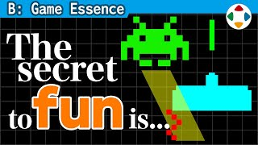
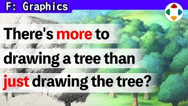
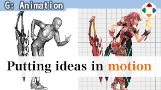
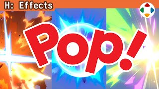
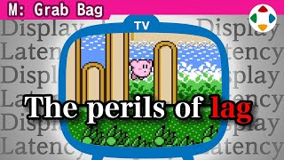
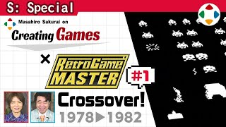

樱井政博 · 做游戏 中文图文课
把樱井政博（《星之卡比》《任天堂明星大乱斗》总监）的 YouTube 频道 Masahiro Sakurai on Creating Games 逐集整理成可自己控制节奏的中文图文课：要点、截图、图解、原视频时间戳和自测题。
261/261已完成单集
15个分类
795道自测题
19 小时 13 分全部单集原视频时长

A
工作态度
A: Work Ethic
如何对待和准备工作：适用于所有行业的态度与习惯。
已上线 23/231 小时 7 分

B
游戏本质
B: Game Essence
什么让游戏好玩：风险与回报、难度、平衡等根本问题。
已上线 29/291 小时 42 分

C
企划与游戏设计
C: Planning & Game Design
企划书、游戏规则与系统设计。
已上线 30/301 小时 38 分

D
设计细节
D: Design Specifics
具体设计细节：操作、镜头、关卡等。
已上线 18/181 小时 0 分

E
团队管理
E: Team Management
如何带团队、沟通与协作。
已上线 15/1555 分 2 秒

F
图形美术
F: Graphics
图形与美术表现。
已上线 20/201 小时 31 分

G
动画
G: Animation
角色动作与动画手法。
已上线 18/1857 分 54 秒

H
特效
H: Effects
视觉特效的设计。
已上线 11/1145 分 16 秒

I
音频
I: Audio
音乐与音效。
已上线 14/1451 分 38 秒

J
UI 界面
J: UI
界面与信息呈现。
已上线 15/1549 分 32 秒

K
程序与技术
K: Programming & Tech
程序与开发技术、工作流。
已上线 9/940 分 24 秒

L
市场营销
L: Marketing
宣传、发布与市场。
已上线 9/937 分 34 秒

M
杂谈
M: Grab Bag
各种杂谈、往事与开发轶事。
已上线 31/312 小时 39 分

N
游戏概念
N: Game Concepts
樱井亲自讲解自己作品的游戏概念。
已上线 13/132 小时 26 分

extra
特别篇
Extras: Specials & Channel Videos
不属于 A–N 分类的单独视频：3 期 Special Crossover（与 GameCenter CX 有野晋哉联动），以及频道介绍、作品集与开场预告。
已上线 6/61 小时 31 分